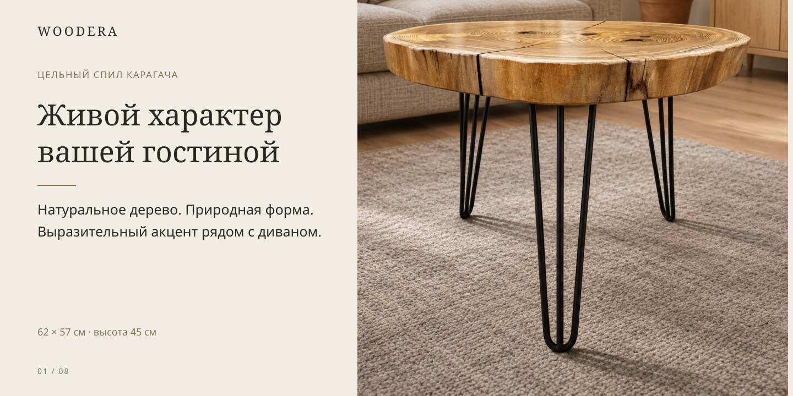
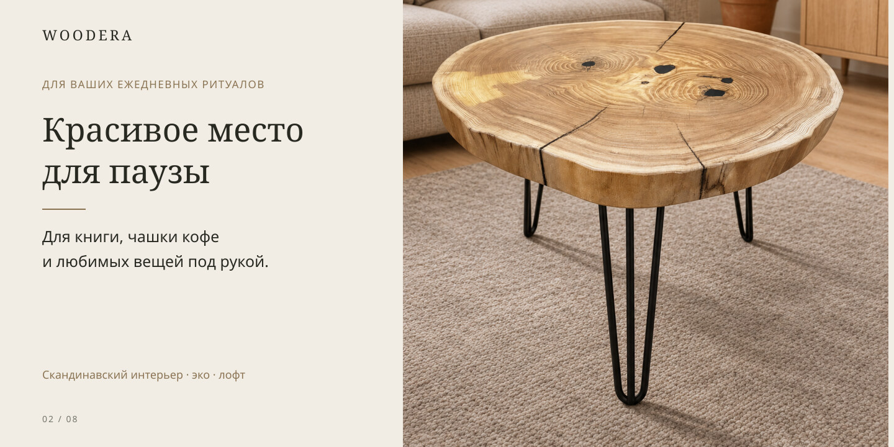
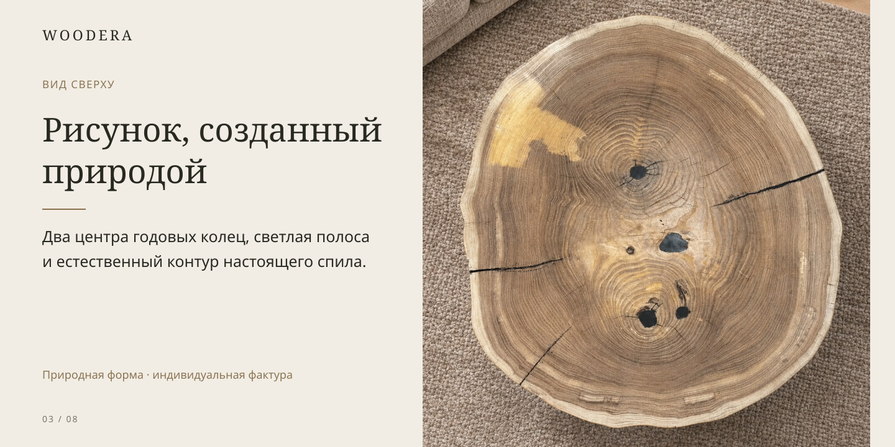
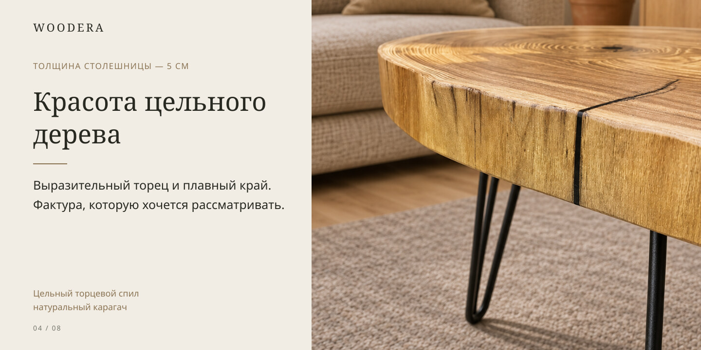
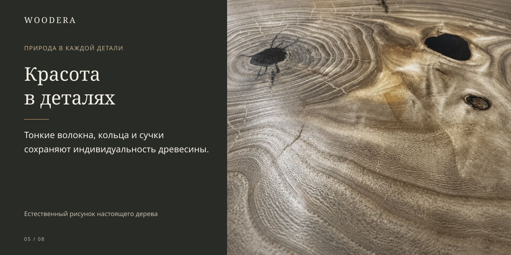
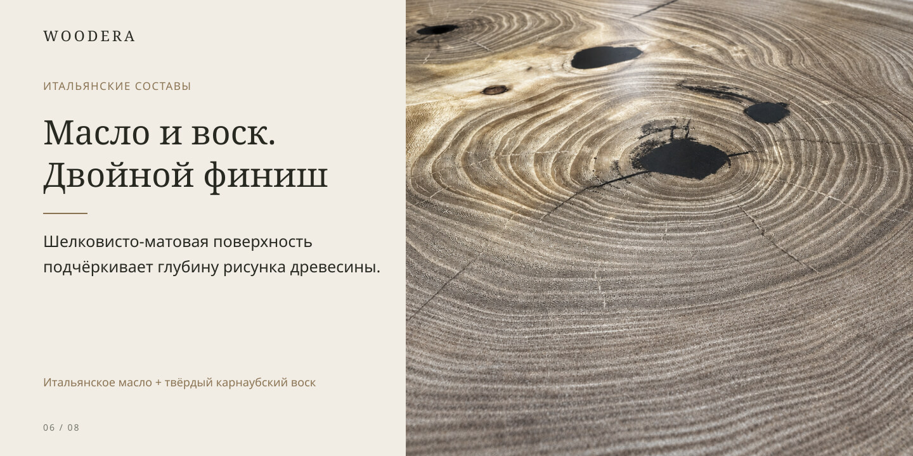
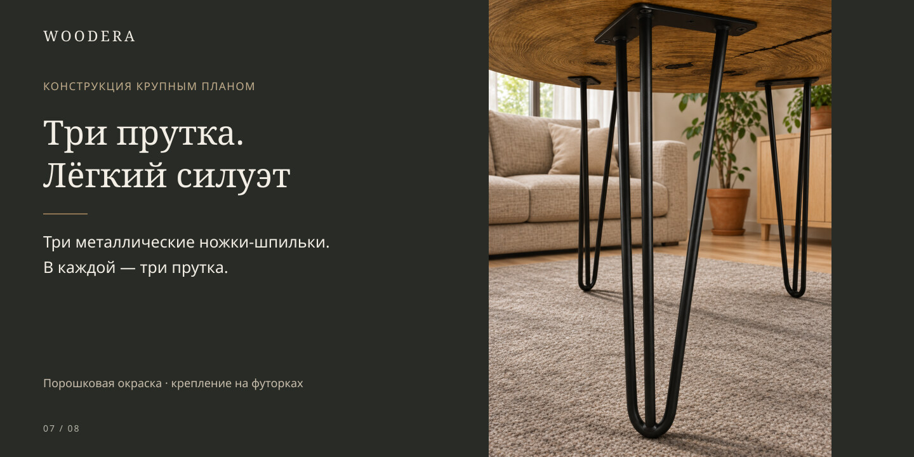
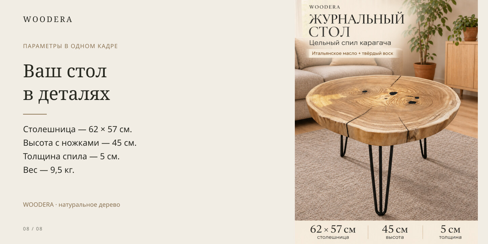

Живой характер вашей гостиной
Журнальный столик WOODERA из цельного торцевого спила карагача — небольшой кофейный стол для гостиной, кабинета или зоны отдыха. Натуральное дерево, выразительные годовые кольца и чёрные металлические ножки создают спокойный интерьерный акцент.

Красивое место для паузы
Деревянный журнальный стол удобно расположить перед диваном или рядом с креслом. На столешнице найдётся место для книги, чашки на подставке и небольшого декора. Кофейный столик из спила дерева сочетается со скандинавским интерьером, эко-стилем и лофтом.

Рисунок, созданный природой
Вид сверху раскрывает рисунок этого спила карагача: два центра годовых колец, светлую полосу древесины, сучки и естественные линии трещин. Контур столешницы сохранён природным. Размер 62 × 57 см указан по габаритам спила; форма не является правильной окружностью.

Красота цельного дерева
Столешница толщиной 5 см выполнена из цельного торцевого спила карагача. Крупный план показывает структуру торца, переходы оттенков и линии природных трещин. Эти особенности формируют внешний характер конкретного стола.

Красота в деталях
На макрофотографии видны тонкие волокна, годовые кольца и тёмные участки сучков. Природные различия в оттенках и фактуре делают журнальный стол из карагача выразительным без дополнительного декора. Освещение и экран могут влиять на восприятие цвета.

Масло и воск. Двойной финиш
Финишная обработка сочетает итальянское масло и твёрдый карнаубский воск. Масло подчёркивает рисунок натурального дерева, воск создаёт дополнительный защитный слой. Шелковисто-матовое покрытие сохраняет спокойный сатиновый блик. Для горячей или влажной посуды используйте подставки.

Три прутка. Лёгкий силуэт
Три чёрные металлические ножки-шпильки состоят из трёх прутков каждая. Порошковая окраска завершает лаконичный силуэт. Ножки крепятся к столешнице через монтажные пластины на мебельные резьбовые футорки. Общая высота стола с ножками — 45 см; вес изделия — 9,5 кг.

Ваш стол в деталях
Параметры журнального стола WOODERA: столешница 62 × 57 см, толщина 5 см, высота с ножками 45 см, вес 9,5 кг. Для ухода используйте мягкую слегка влажную салфетку и вытирайте поверхность насухо. Не оставляйте воду на столешнице и не размещайте стол вплотную к источнику тепла.